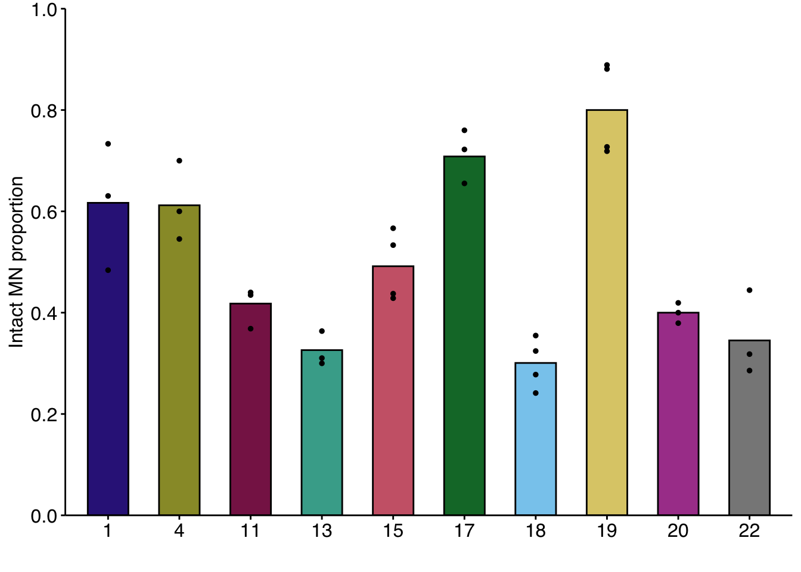

Code for generating Fig. 1D and H
#Below are the programs that you will need to to run this script. However, you will need to import these programs first using the code:
#install.packages()
#Example > install.packages("knitr")
library(knitr)
library(dplyr)
library(readr)
library(tidyverse)
library(ggplot2)
library(readxl)MN_24h is the rupture frequency for MN containing a single chromosome for each replicate (N = 3 - 4)
MN_24h_pooled is the pooled rupture frequency for all replicates
MN_24h <- read_xlsx("RPE1_reversine_24h_MN_data.xlsx", sheet = 1)
MN_24h_pooled <- read_xlsx("RPE1_reversine_24h_MN_data.xlsx", sheet = 2)R was reading these data as integers rather than characters. Which I needed to changes because this a categorical not continuous data
MN_24h$chromosome <- as.character(MN_24h$chromosome)
MN_24h$replicate <- as.character(MN_24h$replicate)
MN_24h_pooled$chromosome <- as.character(MN_24h_pooled$chromosome)This is so that 1 and 4 come before chromosome 11
MN_24h_reorder <- MN_24h %>%
mutate(chromosome = fct_relevel(chromosome,
"1", "4", "11","13", "15", "17", "18", "19", "20", "22"))
MN_24h_pooled_reorder <- MN_24h_pooled %>%
mutate(chromosome = fct_relevel(chromosome,
"1", "4", "11","13", "15", "17", "18", "19", "20", "22"))This general theme will be used for all the graphs in the paper, for consistency.
my_theme <- theme(axis.text.x = element_text(size=12, color = "black", family = "sans"),
axis.text.y = element_text(size=12, color = "black", family = "sans"),
text=element_text(size = 12, family="sans"),
axis.ticks= element_line(color = "black"),
legend.position = "none")These colors are color bind safe and re-ordered from the Safe R color pallet
safe_v2 <- c("#332288", "#999933", "#882255", "#44AA99", "#CC6677", "#117733", "#88CCEE", "#DDCC77", "#AA4499","#888888")rupture_freq_plot_MN_24h <- ggplot() +
geom_col(data = MN_24h_pooled_reorder, aes(x = chromosome, y = `percent intact`, fill = chromosome), width = 0.57,
color = "black", linesize = 0.5) +
geom_point(data = MN_24h_reorder, mapping = aes(x = chromosome, y = `percent intact`), size = 1) +
ylab('Intact MN proportion') +
xlab('') +
scale_y_continuous(expand = c(0,0), breaks = seq(0, 1, 0.2), limits = c(0,1)) +
scale_fill_manual(values = safe_v2) +
theme_classic() +
my_theme
rupture_freq_plot_MN_24h